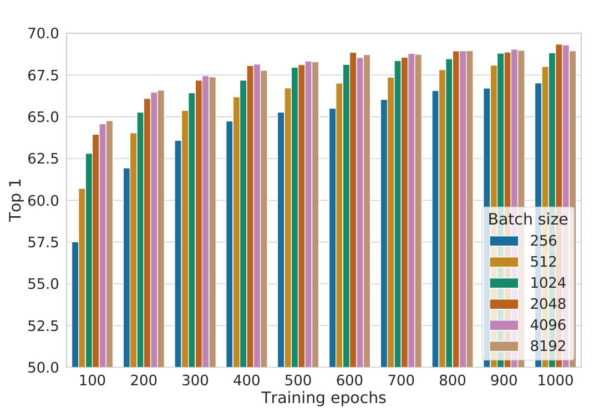

One hour, one causal chain
Follow the route in order. The loss will feel much less arbitrary once the missing label, the shortcut problem, and the actors in one minibatch are visible.
Three familiar tools, one new relationship
Similarity becomes a logit
For L2-normalized vectors, the dot product is cosine similarity:
It ranges from −1 to 1. SimCLR divides these similarities by a temperature and treats them like classification logits.
Cross-entropy asks for one winner
A softmax turns logits into relative probabilities. If the desired view receives probability , cross-entropy charges . Probability 1 is free; probability costs about 1.099.
Remove labels, and the training target disappears
A supervised ImageNet model receives an image x and a human class label y. Cross-entropy can then say which output should win. SimCLR wants a useful encoder before labels arrive, so it needs a target that can be constructed from the images themselves.
This is instance discrimination, not semantic classification: two photographs of different dogs are negatives because they came from different source images, even though a human would assign them the same class.
An easy pretext task can teach the wrong skill
The obvious hope is that any transformation creates useful paired views. The paper tests that idea and finds a failure: no single studied transformation is sufficient for a strong representation, even when the network can almost perfectly identify positives in the contrastive task.
With random crops alone, two crops of the same image often share a color distribution. A network can match color histograms instead of learning shapes or objects. It wins the constructed game without acquiring features that transfer well.
That failure causes SimCLR’s central design choice: compose spatial and appearance transformations—especially crop with color distortion—so the cheap shortcut becomes unreliable.
Name every player before the equation
| Symbol | Meaning | Shape or count | Role |
|---|---|---|---|
| xk | One unlabeled source image | k = 1…N | Supplies identity for a positive pair. |
| t, t′ ∼ T | Independently sampled transformations | Functions on images | Define which changes should preserve identity. |
| x̃2k−1, x̃2k | Two correlated views of xk | Image tensors; 2N views total | Become a positive pair. |
| Shared ResNet encoder | ; for standard ResNet-50 | Learns the representation retained after pretraining. | |
| Shared two-layer nonlinear projection head | in the default setup | Creates the space where NT-Xent is applied. | |
| Cosine similarity between and | One scalar in [−1,1] | Acts as a logit before division by . | |
| N, 2N | Source images and augmented views | Default N=4096, so 2N=8192 | For each anchor: 1 positive and 2N−2 negatives. |
The default dimensionalities and batch size above are the paper’s main ablation configuration. The framework itself permits other encoders and sizes.
Two views share weights, then compete in projection space
The projection head is not decorative. Figure 8 reports that a nonlinear head improves linear evaluation of h by more than 10 percentage points relative to no head in that experiment. The paper’s interpretation is that g can discard transformation-specific information to satisfy the contrastive loss while h retains more information for later tasks.
Ask one anchor to identify its paired view
Choose view i as the anchor and its sibling j as the correct answer. The anchor does not compare with itself. Every other one of the 2N−1 views enters the softmax denominator.
The designated positive’s exponentiated similarity.
The positive plus all 2N−2 in-batch negatives.
Scales every similarity before softmax; smaller τ sharpens rank differences.
Then reverse the direction so j must identify i. The full minibatch averages both directions for every source image:
The loss rewards relative agreement. A positive similarity of .8 can be excellent when every negative is far away and poor when a negative is even closer.
Compute an entire four-view NT-Xent batch
Two positive pairs: (1,2) and (3,4)
Use the following normalized projections. Because they are normalized, their dot products are cosine similarities.
- Choose anchor 1. Its correct answer is view 2. Views 3 and 4 are negatives; view 1 itself is excluded.
- Compute similarities.
- Scale by and exponentiate.
- Normalize.
- Charge cross-entropy.
- Reverse the pair. Anchor 2 sees similarities , the same three values in a different order, so .
- Finish the other source. By symmetry, .
- Average all anchors.
Predict before reveal: if every collapses to the same normalized vector, what is here?
Each anchor would see three indistinguishable candidates.
Answer: , because the anchor is excluded and the positive receives probability .
Temperature sharpens both correct and incorrect rankings
Hold the similarities fixed: positive=.8, hard negative=.6, easy negative=−.5. Only τ changes.
| Exponentiated terms | Positive probability | Loss | |
|---|---|---|---|
| .1 | |||
| .5 | |||
| 1 |
Here the positive already ranks first, so lower τ concentrates probability on it and lowers the loss. That observation does not justify “smaller is always better.” Now let the hard negative rise slightly above the positive, from .6 to .81.
Predict before reveal: which temperature reacts more strongly to the .01 ranking error?
Answer: τ=.1 reacts more strongly. Its loss rises by about .618, versus about .088 at τ=1.
Table 5 in the paper confirms that τ must be tuned together with normalization: among the reported L2-normalized settings, τ=.1 gives 64.4% linear-evaluation top-1, while τ=.05 gives 59.7%, τ=.5 gives 60.7%, and τ=1 gives 58.0%. “Sharper” is useful only at an appropriate scale.
The augmentation pipeline writes the invariance contract
From source image to learned shortcut—or transferable cue
- Start with one bird photograph x. Its label is unavailable; source identity is the only pairing signal.
- Sample two crops. One contains the bird and branch; the other contains a different region. They are declared positive because both came from x.
- Consider the crop-only shortcut. Patches from one photograph often share color statistics, so matching histograms can identify the source without recognizing bird structure.
- Add strong color distortion. Shared color statistics become unreliable while some shape and spatial cues remain. The easiest route to matching must change.
- Apply the pair objective. NT-Xent rewards whatever cues still distinguish the sibling crop from other images in the batch.
- Check transfer, not pretext ease. In the paper’s asymmetric Figure 5 ablation, crop alone reports 33.1% ImageNet linear-evaluation top-1, while the crop→color composition reports 56.3%. The measurement supports the shortcut diagnosis; it does not prove that every stronger transformation is safe.
Predict before reveal: which “same-image” view is most dangerous for bird-species transfer?
The bird is small and perched on a branch.
Answer: the branch-only crop. “Same source image” does not guarantee “same task-relevant content.”
SimCLR’s default sequence uses random crop and resize (with flip), color distortion, and Gaussian blur. Each choice is a claim about nuisance variation. A different downstream task—color-sensitive disease detection, text recognition, or fine-grained plumage classification—may need a different contract.
Large batches buy alternatives; long training narrows the gap

The surrounding evidence completes the recipe
| Paper evidence | What it supports | What it does not prove |
|---|---|---|
| Figure 5: crop→color reaches 56.3% in the asymmetric augmentation ablation; crop alone is 33.1%. | Composed augmentations can block shortcuts and materially improve transfer. | Any composition or any stronger augmentation will help every task. |
| Figure 8: the nonlinear projection head is about 3 points better than a linear head and more than 10 points better than no projection in the reported setup. | The loss space and retained representation can benefit from being different. | z is useless, or every later contrastive method needs this exact head. |
| Table 5: L2 normalization with τ=.1 reaches 64.4% top-1 versus 58.0% at τ=1; removing normalization gives about 57%. | Normalization and temperature jointly shape useful hard-example weighting. | τ=.1 is universally optimal. |
| Table 6: standard ResNet-50 reaches 69.3%; the 4×-width, 375M-parameter model reaches 76.5% after 1000 epochs. | SimCLR can learn strong frozen features and benefits from scale. | 76.5% is the result of the default 24M-parameter, 100-epoch model. |
The default ablation setup uses batch size 4096, 100 epochs, a two-layer projection MLP, LARS, linear warmup, cosine learning-rate decay, and global BatchNorm. The paper reports about 1.5 hours on 128 TPU v3 cores for ResNet-50 at that setting. Its strongest comparison models use wider networks and 1000 epochs, so the headline result is not evidence that the recipe is cheap.
Separate instance identity, semantic meaning, and evaluation
Limitations to keep attached to the result
- False negatives: different images of the same semantic class are treated as negatives, so the instance objective can oppose class-level similarity.
- Augmentation bias: the encoder is encouraged to discard variation introduced by T. If that variation carries downstream meaning, invariance becomes information loss.
- Batch and systems dependence: in-batch negatives, distributed global BatchNorm, LARS, large TPU counts, and long schedules are part of the reported system.
- Evaluation scope: the main ablations are ImageNet-centered and use frozen-feature linear evaluation as a proxy for representation quality.
- Leakage risk: when both positives sit on one device, local BatchNorm statistics can reveal pairing structure. The paper aggregates statistics globally to prevent this shortcut.
Misconception checks
“A negative is always a different semantic class.”
No. It is a view from a different source image. A second dog photograph is a negative to the first dog photograph in original SimCLR.
“The objective directly pulls every positive to cosine similarity 1.”
Not exactly. NT-Xent minimizes a relative softmax loss: the positive must outrank the alternatives. Its pressure depends on every candidate and on τ.
“A lower temperature is always better.”
No. Lower τ sharpens ranking differences, including mistakes. Table 5’s τ=.05 result is worse than τ=.1 in the reported setting.
“The projection z is the representation to deploy.”
Not in the paper’s protocol. The contrastive loss acts on z=g(h); SimCLR discards g and evaluates h from the encoder.
“Near-perfect contrastive accuracy means the representation is good.”
No. The paper’s single-augmentation experiments can make the pretext task easy while producing poor linear-evaluation features. A shortcut can solve the task without learning transferable semantics.
Close the traces, then retrieve the mechanism
What exactly supplies supervision in SimCLR?
Source identity under stochastic augmentation: two views from one source image are designated as a positive pair, while views from other source images in the minibatch become negatives.
For source images, how many candidates does one anchor classify over?
There are total views. Excluding the anchor leaves candidates: one positive and negatives.
Why are both and computed?
Each view serves as the anchor in turn. Their denominators exclude different self-views, and the two directions provide symmetric training pressure.
What does temperature change?
It divides every cosine similarity before softmax. Lower sharpens relative rankings, increasing confidence when the positive leads and increasing sensitivity when a hard negative rivals or exceeds it.
Why combine crop with color distortion?
Crop-only pairs may share easy color-histogram cues. Color distortion weakens that shortcut, pushing the network toward features that better survive appearance changes.
Why does SimCLR apply the loss to but retain ?
The projection head can specialize for transformation invariance while allowing to retain information that may be useful downstream. The paper’s Figure 8 and Table 3 support that separation.
What does complete collapse cost in a batch with source images?
Every candidate has equal similarity, so the positive probability is and each directional loss is , not zero.
What is Figure 9’s safest conclusion?
At short schedules, larger batches converge faster in the reported ResNet-50/ImageNet setup; with more epochs and randomly resampled batches, performance gaps between batch sizes shrink or disappear.
Connect it to your mental map
Reuse the encoder; change the supervision
The earlier ResNet lesson explains how residual blocks make a deep visual encoder trainable. SimCLR keeps that machinery and changes where the target comes from: relationships between views replace class labels.
The BatchNorm lesson also returns with a warning. Statistics are not neutral when positive pairs share a device; local statistics can leak pairing information, so SimCLR uses global BatchNorm.
Similarity and temperature do different jobs elsewhere
Transformer attention uses similarity to route information within a forward pass. SimCLR uses similarity as logits for a learning signal across examples. DPO’s β and SimCLR’s τ both rescale a logistic-style comparison, but β weights policy-relative preference margins while τ divides representation similarities.
A VAE learns through reconstruction plus latent regularization. SimCLR avoids reconstructing pixels; it learns by identifying which view belongs with which source. They are different solutions to the broader problem of finding supervision when labels are absent.
The positive pair writes the lesson; the batch grades it.
Native intuition: SimCLR says, “these two altered views should still identify one source, and they should outrank every other view.” Augmentations decide what may change, NT-Xent turns the sibling view into the answer among in-batch alternatives, temperature controls how sharply ranking differences matter, and the projection head absorbs the invariance pressure so the encoder representation can remain useful.